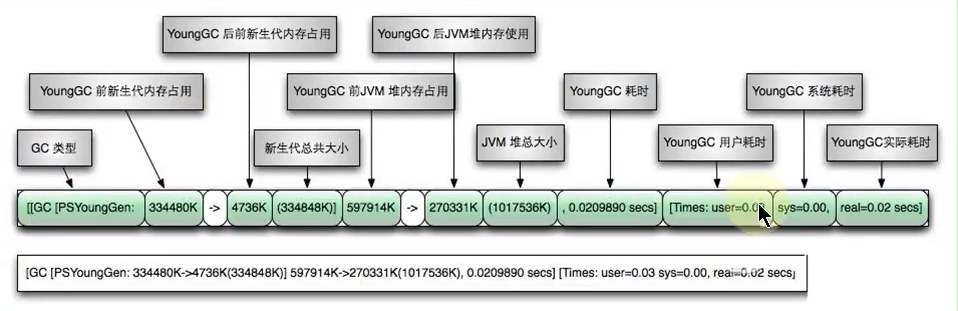
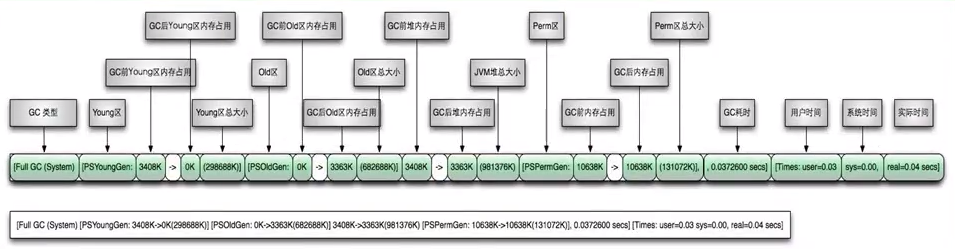
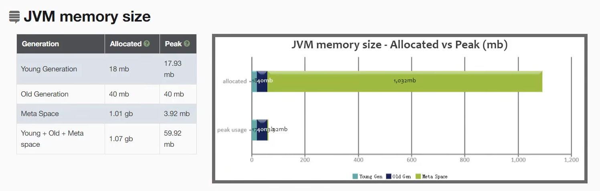
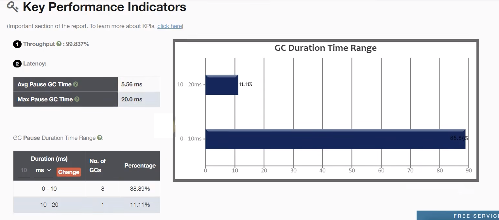

JVM监控及诊断-分析GC日志
01-GC日志参数
见上一篇
02-GC日志格式
针对 HotSpot VM 的实现，它里面的 GC 按照回收区域又分为两大种类型：一种是部分收集(Partial GC), 一种是整堆收集(Full GC)
- 部分收集：不是完整收集整个Java 堆的垃圾收集。其中又分为：
- 新生代收集(Minor GC / Young GC): 只是新生代(Eden \ S0, S1)的垃圾收集
- 老年代收集(Major GC / Old GC): 只是老年代的垃圾收集。
- 目前，只有 CMS GC 会有单独收集老年代的行为。
- 注意，很多时候 Major GC 会和 Full GC 混淆使用，需要具体分辨是老年代回收还是整堆回收。
- 混合收集(Mixed GC): 收集整个新生代以及部分老年代的垃圾收集。
- 目前，只有G1 GC会有这种行为
- 整堆收集(Full GC):收集整个 Java 堆和方法区的垃圾收集。
- 新生代收集：当Eden区满的时候就会进行新生代收集，所以新生代收集和S0区域和S1区域无关
- 老年代收集和新生代收集的关系：进行老年代收集之前会先进行一次年轻代的垃圾收集，原因如下：一个比较大的对象无法放入新生代，那它自然会往老年代去放，如果老年代也放不下，那会先进行一次新生代的垃圾收集，之后尝试往新生代放，如果还是放不下，才会进行老年代的垃圾收集，之后在往老年代去放，这是一个过程，我来说明一下为什么需要往老年代放，但是放不下，而进行新生代垃圾收集的原因，这是因为新生代垃圾收集比老年代垃圾收集更加简单，这样做可以节省性能
- 进行垃圾收集的时候，堆包含新生代、老年代、元空间/永久代：可以看出Heap后面包含着新生代、老年代、元空间，但是我们设置堆空间大小的时候设置的只是新生代、老年代而已，元空间是分开设置的
- 哪些情况会触发 Full GC?
- 老年代空间不足
- 方法区空间不足
- 显示调用 System.gc()
- Minor GC 进入老年代的数据的平均大小 > 老年代的可用内存
- 大对象直接进入老年代, 而老年代空间不足
GC日志分类
MinorGC
MinorGC(或 Young GC YGC)日志

Full GC日志介绍

GC日志结构剖析
垃圾收集器
- 使用 Serial 收集器在新生代的名字是 Default New Generation, 因此显示的是 “[DefNew”
- 使用 ParNew 收集器在新生代的名字会变成 “[ParNew”,意思是 “Parallel New Generation”
- 使用 Parallel Scavengel 收集器在新生代的名字是 “[PSYoungGen”, 这里的 JDK1.7 使用的就是 PSYoungGen
- 使用 Parallel Old Generation 收集器在老年代的名字是 “[Par0ldGen”
- 使用 G1 收集器的话，会显示为 “garbage-first heap”
Allocation Failure
表明本次引起 GC 的原因是因为在年轻代中没有足够的空间能够存储新的数据了。
GC前后情况
通过图示，我们可以发现GC日志格式的规律一般都是：GC前内存占用 -> GC 后内存占用（该区域内存总大小)
[PSYoungGen:5986K->696K(8704K)]5986K->704K(9216K)中括号内：GC 回收前年轻代堆大小，回收后大小，（年轻代堆总大小）
括号外：GC 回收前年轻代和老年代大小，回收后大小，（年轻代和老年代总大小）
GC时间
GC 日志中有三个时间：user, sys 和 real
- user - 进程执行用户态代码（核心之外）所使用的时间。这是执行此进程所使用的实际 CPU 时间，其他进程和此进程阻塞的时间并不包括在内。在垃圾收集的情况下，表示 GC 线程执行所使用的 CPU 总时间。
- sys - 进程在内核态消耗的 CPU 时间，即在内核执行系统调用或等待系统事件所使用的 CPU 时间
- real - 程序从开始到结束所用的时钟时间。这个时间包括其他进程使用的时间片和进程阻塞的时间（比如等待 I/O 完成）。对于并行 gc , 这个数字应该接近（用户时间 + 系统时间）除以垃圾收集器使用的线程数。
由于多核的原因，一般的 GC 事件中，real time 是小于 sys + user time 的，因为一般是多个线程并发的去做 GC ,所以 real time 是要小于 sys + user time 的。如果 real > sys + user 的话，则你的应用可能存在下列问题：IO 负载非常重或者是 CPU 不够用。
Minor GC 日志解析
2020-11-20T17:19:43.265-0800:0.822:[GC(ALL0CATI0 N FAILURE) [PSYOUNGGEN:76800K->8433K(89600K)]76800K->8449K(294400K),0.0088371SECS][TIMES:USER=0.02 SYS=0.01,REAL=0.01 SECS]详解
2020-11-20T17:19:43.265-0800 #日志打印时间 日期格式 如2013-05-04T21:53:59.234+0800 (添加-XX:+PrintGCDateStamps参数)
0.822: #gc发生时，Java虚拟机启动以来经过的秒数
[GC(Allocation Failure) #发生了一次垃圾回收，这是一次Minior GC。它不区分新生代还是老年代GC，括号里的内容是gc发生的原因，这里的Allocation Failure的原因是新生代中没有足够区域能够存放需要分配的数据而失败
[PSYoungGen:76800K->8433K(89600K)
PSYoungGen：#表示GC发生的区域，区域名称与使用的GC收集器是密切相关的
#Serial收集器：Default New Generation 显示Defnew
#ParNew收集器：ParNew
#Parallel Scanvenge收集器：PSYoung
#老年代和新生代同理，也是和收集器名称相关
76800K->8433K(89600K)：#GC前该内存区域已使用容量->GC后盖区域容量(该区域总容量)
#如果是新生代，总容量则会显示整个新生代内存的9/10，即eden+from/to区
#如果是老年代，总容量则是全身内存大小，无变化
76800K->8449K(294400K) #在显示完区域容量GC的情况之后，会接着显示整个堆内存区域的GC情况：GC前堆内存已使用容量->GC后堆内存容量（堆内存总容量），并且堆内存总容量 = 9/10 新生代 + 老年代，然后堆内存总容量肯定小于初始化的内存大小
,0.0088371 #整个GC所花费的时间，单位是秒
[Times：user=0.02 sys=0.01,real=0.01 secs]
user：#指CPU工作在用户态所花费的时间
sys：#指CPU工作在内核态所花费的时间
real：#指在此次事件中所花费的总时间Full GC 日志解析
2020-11-20T17:19:43.794-0800:1.351:[FULL GC(METADATA GC THRESH0LD) [PSYOUNGGEN:10082K->0K(89600K)][PAR0 LDGEN:32K->9638K(204800K)] 10114K->9638K(294400K), [METASPACE:20158K->20156K(1067008K)],0.0285388SECS][TIMES:USER=0.11,SYS=0.00,REAL=0.03 SECS]详解
2020-11-20T17:19:43.794-0800 #日志打印时间 日期格式 如:2013-05-04T21:53:59.234+0800 (添加-XX:+PrintGCDateStamps参数)
1.351 #gc发生时，Java虚拟机启动以来经过的秒数
Full GC(Metadata GCThreshold) #发生了一次垃圾回收, 这一次 Full GC. 它不区分新生代 GC 还是老年代 GC
#括号中是 gc 发生的原因，原因：Metaspace区不够用了。
#除此之外，还有另外两种情况会引起Full GC，如下：
#1、Full GC(FErgonomics)
#原因：JVM自适应调整导致的GC
#2、Full GC（System）
#原因：调用了System.gc()方法
[PSYoungGen: 100082K->0K(89600K)]
PSYoungGen： #表示GC发生的区域，区域名称与使用的GC收集器是密切相关的
#Serial收集器：Default New Generation 显示Defnew
#ParNew收集器：ParNew
#Parallel Scanvenge收集器：PSYoungGen
#老年代和新生代同理，也是和收集器名称相关
10082K->0K(89600K)： #GC前该内存区域已使用容量->GC该区域容量(该区域总容量)
#如果是新生代，总容量会显示整个新生代内存的9/10，即eden+from/to区
#如果是老年代，总容量则是全部内存大小，无变化
ParOldGen：32K->9638K(204800K) #老年代区域没有发生GC，因此本次GC是metaspace引起的
10114K->9638K(294400K), #在显示完区域容量GC的情况之后，会接着显示整个堆内存区域的GC情况：GC前堆内存已使用容量->GC后堆内存容量（堆内存总容量），并且堆内存总容量 = 9/10 新生代 + 老年代，然后堆内存总容量肯定小于初始化的内存大小
[Meatspace:20158K->20156K(1067008K)], #metaspace GC 回收2K空间03-GC日志分析工具
GCeasy
官网地址：https://gceasy.io/，
GCeasy 是一款在线的 GC 日志分析器，可以通过 GC 日志分析进行内存泄漏检测、GC 暂停原因分析、JVM 配置建议优化等功能，而且是可以免费使用的（有一些服务是收费的)


GCViewer
-
下载GCViewer工具
-
只需双击 gcviewer-1.3x.jar 或运行 java-jar gcviewer-1.3x.jar (它需要运行 java1.8vm),即可启动 GCViewer(gui)